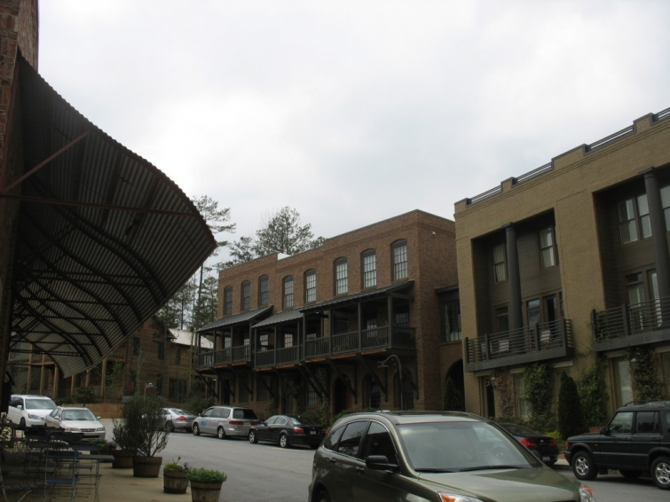

.png)
.PNG)
.PNG)
.PNG)
.PNG)
.PNG)
.JPG)
.JPG)
.PNG)
.PNG)


On a cloudy Saturday morning, a few years ago, when we had a much bigger vehicle, we loaded up all the teenagers and one of their friends and took a little roadtrip to Serenbe. You know… that conservation-minded-planned-community southwest of Atlanta. I had read about it in a number of various shelter magazines and decided it would be a fun way to spend the day. Afterall, I knew it had a bakery, a couple of good restaurant, a few shops, and great architecture. What more do you need for a Saturday excursion?

The first thing we saw when our crew approached Serenbe was the super huge barn at the top of the post. We drove a little further and arrived in “town,” parked the car, and went straight to the Hil Restaurant for brunch. We had made reservations, but since we were about the only ones there, it wasn’t really necessary that day.
I loved the interior done by Stan Topol. Even the bathroom was beautiful! (and no, I did not take a photo of it.) There is a nice article about the interior design of the restaurant here.
Here is a sample of their brunch menu. the-hil.com
the-hil.com
If I remember correctly, someone had a pimento cheese with fried egg and bacon sandwich. A couple of the kids shared the margherita pizza, and I know that I had their signature chicken pan pie. It was all very tasty.
After eating, we wandered around the little town by foot, and we found this path that went all through the woods. So of course we had to explore! 
And while wandering down the path, we came upon these little treehouses that everyone played in. (Hey, what else do you do with a bunch of teenagers?!)


When we finished our adventure in the woods, we strolled through town. There were small shops with unique home items, a couple of clothing boutiques, and an art gallery (and an interesting wall.)
(Oldest child hates having his picture made, and daughter was in her “red head” phase.)
I really liked their little market called Harris and Clark, but I am not sure if it is still there. The website lists Fern’s Market as their local market now, but the interior looks very similar to what was that of Harris and Clark’s.
If you click on the link above you can watch a cute video of the owner (a former lawyer) talking about starting this market. Another store that is there is the Bilt House. It is full of home accessories of every kind.
There is also Repurpose – another home accessories and furnishings boutique. tphblog.com
tphblog.com
Of course, it was time to eat again after all this walking, so we headed to the Blue Eyed Daisy for snacks. blog.alternativeapparel.com
blog.alternativeapparel.com
 serenbestyleandsoul.blogspot.com
serenbestyleandsoul.blogspot.com
 serenbestyleandsoul.blogspot.com
serenbestyleandsoul.blogspot.com
With tummies full of sweets and coffees, we then began looking at all the homes in Serenbe –
like this vine covered cottage…

and this wonderful farmhouse beauty….
and then there was this rustic favorite of mine there.
We toured this huge house that was under construction and is now for sale. serenbecommunity.com
serenbecommunity.com
the kitchen under construction…
 the bathroom…
the bathroom…

the amazing stairs under construction…
and the stairs now as shown in the real estate listing. serenbecommunity.com
serenbecommunity.com
The next two homes are not currently for sale. I love the exteriors on both of them!

This cute little yellow one was recently for sale. I don’t know if it is still on the market or not. facebook.com
facebook.com
This one was for sale last year. gossiprocks.com
gossiprocks.com
And this is its spacious kitchen.
And finally here is one that is currently listed for sale if you want to pack your bags and move. 🙂
Here is its kitchen. atlantafineliving.com
atlantafineliving.com
If we had stayed later, I would have liked to have had dinner at the Farmhouse Restaurant there in Serenbe,
but we were still quite full from such a big brunch at The Hil and all the goodies from the Blue Eyed Daisy. So we piled back in the car and headed home. The day was enjoyable, but the place seemed very deserted to me on that particular cloudy weekend. There were many homes for sale at that time, and I was worried that Serenbe wasn’t going to “make it.” Since then though, there has been MUCH positive publicity for it, and they have had several really big home events to occur there. I think everything has picked up, and it has really taken off. We need to make another trip over there now and enjoy all that has been added.
I’ll have another post for you with photos of the “big home events” in a day or two. Until then, I hope you have enjoyed wandering around Serenbe with me. If you have time this weekend and you are in that area of Georgia, you should take a drive over and see the little town for yourself.
Until next time…


.PNG)
I am taking a day trip here as soon as I possible can, haha! Thank you so much for sharing! The town is so beautiful with such character in the little shops and restaurants, but those HOMES!!! So many of my “dream homes” in one spot.
———————————————————————-
Lindsay – You should plan a trip there…stay at the inn and eat at one of the nice restaurants! The houses are gorgeous, and I bet it would be very pretty there in the fall. Thanks for pinning some of the house photos on Pinterest. Maybe one of them WILL be your home one day. 🙂
Kelly
Thanks so much for sharing all your wonderful pictures. Serenbe looks like a wonderful little town to visit. 🙂
———————————————————————-
Stephanie – Thank you for stopping by the blog to read here. Serenbe is a neat little town, and I wish I could take everyone around to see it!
Have a great weekend.
Kelly
Hi Kelly,
You show us the best areas of the south, I’ve got to get to that region of the country. Maybe it’s because you’re a teacher, you plan great field trips! 🙂
I’m happy to be back from my vacation and finally able to catch up on my favorite blog sites.
Karen
———————————————————————-
Karen – I’m so glad you like all the places to visit. There are some pretty places here (as there are in many areas of our country.) I thought your comment about the connection to being a teacher and the field trips was hilarious! I’ve never thought about it like that. I’m happy you had a nice vacation and that you are back in the blog world again.:)
Kelly
Hi Kelly,
What a fun time you had! Serenbe looks like a wonderful little village… one that I would love to see. Thank you for sharing these photos with us (saves me thousands in airline tickets)! 🙂
Cath
———————————————————————
Cath – Glad I can save you thousands of dollars! Ha ha. You would love Serenbe…wish you could come south and see it. More photos coming on the next blog post. Hope you enjoy them too!
Kelly
I absolutely love the decor in the Hil restaurant; I had to pin that photo! Thanks for the tour. I really hope Serenbe “makes it,” we need all the quaint small towns we can get!
———————————————————————–
Aimee – Yes, the Hil IS gorgeous, and thank you for pinning the photo! I really want to go back and eat at the Farmhouse. Their fried chicken is supposed to be excellent, and I think the interior of that restaurant is amazing too. I think the town is definitely going to “make it.” It has had so much great PR in the last 3 years, and it was only 2 years old (I think) when we visited….just starting out.
Thank you for visiting the blog and leaving your thoughts here.
Kelly
what a darling little town, we might have to make a road trip over there sometime. i love all the homes, especially the rustic house that is your favorite! the interior of the hil restaurant is beautiful…i’ll have to check out their web page.
isn’t our weather beautiful today? hope you enjoy your weekend!
——————————————————————–
Judy – You should make a trip over there! I am not sure how far it is for you, but if it is long, you could even stay in the inn! (Make it a nice, long weekend trip.) Hope you enjoyed all the football and great weather this weekend!
Rain is on the way here today.
Kelly
Gorgeous little community – are they all new houses made to look old? Or were there some old ones mixed in? Looks like a nice weekend destination next time I’m visiting family in GA!
———————————————————————-
Sarah – They are all new buildings made to look old (at least the ones that I have shown you are.) They really have a mix of architecture there – quite a bit of modern in it too. I hope you get to visit Serenbe when you come to Georgia. Lots of fun, food, and houses to appreciate!
Kelly
Serenbe is so wonderful! Loved seeing your pics!!
—————————————————————-
Amanda – I am so glad you liked all the eye candy – Serenbe has a lot to offer in that department! If you are located in Atlanta, I am sure you have been over to visit the community there. Wish we were a little closer to make more frequent trips!
Kelly